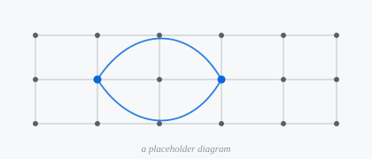

Your Name (你的名字) 你的名字 (Your Name)
Your Name | 你的名字 你的名字 | Your Name
- Curriculum Vitae: CV, Web version (updated intermittently) 简历：PDF 版、网页版（不定期更新）
- Email address: your@email.edu 邮箱：your@email.edu
- Current affiliation: Your Position at Your Institute, Your University (personal homepage; group homepage) 现任职位：你的大学 你的学院 你的职称（个人主页；课题组主页）
- Google Scholar: Your NameGoogle Scholar：你的名字
- ORCID: 0000-0000-0000-0000ORCID：0000-0000-0000-0000
- Inspire HEP: Your NameInspire HEP：你的名字
- arXiv: linkarXiv：链接
- Physics Stack Exchange: linkPhysics Stack Exchange：链接
- Research blog: link研究博客：链接
- YouTube: Your channelYouTube：你的频道
- Zhihu: 你的知乎 [In Chinese]知乎：你的知乎［中文］
- Twitter/X: Your NameTwitter/X：你的名字
- Mastodon: Your NameMastodon：你的名字
- LinkedIn: Your NameLinkedIn：你的名字
- GitHub: Your NameGitHub：你的名字
Welcome to my homepage! I am a researcher in your field, focusing on the structures that underpin your subject and its manifestations in topic A, topic B, and topic C. My recent work centers on your main direction and its concrete realizations, as well as the framework you use in both theoretical and applied settings. I began my research career in your original area; therefore, I also work on traditional topics there, and I am broadly interested in the intersections of discipline X, discipline Y, and discipline Z, especially in applying tools from one to the others. For the mathematics part, I have primarily worked on your mathematical toolkit, including tool 1, tool 2, tool 3, and tool 4. My research aims to develop the structures underlying this area and to reveal the deep connections between these subjects.
欢迎来到我的主页！我是你的领域的研究者，关注支撑该领域的基础结构，以及它在方向 A、方向 B 与方向 C 中的体现。近期工作集中在你的主方向及其具体实现，也关注你所使用的框架在理论与应用两侧的形式。我从你最初的方向开始做研究，因此也持续做那里的经典问题；我广泛兴趣于学科 X、学科 Y 与学科 Z 的交叉，尤其喜欢把一套工具搬到另一套问题里。数学方面我主要使用你的数学工具箱，包括工具 1、工具 2、工具 3 与工具 4。我的目标是发展这一领域背后的结构，并揭示这些主题之间的深层联系。
For more details of my research, please refer to my research page and publication/preprint page. If you are interested in these topics, feel free to contact me via email.
研究详情见我的研究方向页与论文／预印本页。如果你也对这些题目感兴趣，欢迎通过邮件联系。
“The most incomprehensible thing about the world is that it is comprehensible.”
「这个世界最不可理解之处，在于它竟然是可以被理解的。」
— Albert Einstein —— 阿尔伯特·爱因斯坦
I am also actively engaged in academic communication through conferences, seminars, and collaborative community activities, aiming to contribute to and learn from the broader scientific community. See this page for details about my academic activities, including the conferences and workshops I have participated in or plan to attend, as well as my editorial and reviewing work. I also actively engage in popular science communication and digital content creation in my field across multiple platforms. I enjoy discussing interesting topics with others, so feel free to reach out via email.
我也通过会议、讨论班和学术共同体活动参与交流，希望既能有所贡献，也能从更广的共同体中学习。学术活动细节见这一页：包括参加过或计划参加的会议与研讨班，以及审稿和编辑工作。我也会在多个平台做本领域相关的科普与内容创作。我很乐意和别人聊有意思的问题，欢迎来信。
Beyond my work, I enjoy reading books—some of my favorites are "One Hundred Years of Solitude", "Don Quixote", "Moby-Dick", "The Brothers Karamazov", "On the Road", "Pale Blue Dot"—as well as traveling and writing. Check this link (in Chinese) for my 2026 reading list.
工作之外我喜欢读书——偏爱《百年孤独》《堂吉诃德》《白鲸》《卡拉马佐夫兄弟》《在路上》《暗淡蓝点》——也喜欢旅行和写作。这个链接（中文）是我的 2026 年阅读清单。

Some Resources 一些资源
- Your Topic ArXiv Daily: a page updated automatically every eight hours using the arXiv API and GitHub Actions; a keyword list will be given later. 你的方向 ArXiv Daily：用 arXiv API 与 GitHub Actions 每八小时自动更新的页面；关键词列表稍后补上。
- Another Topic ArXiv Daily: automatically collecting arXiv papers in a neighbouring area. 另一个方向 ArXiv Daily：自动汇总相邻领域的 arXiv 论文。
Latest news 最新动态
Check this link for the latest updates since 2022.
2022 年以来的完整更新见这个链接。
- A new preprint is now available on arXiv. This is a collaborative work with Your Collaborator. 新预印本上线 arXiv，与你的合作者共同完成。
- I gave a talk titled "A Placeholder Title on Your Topic" at Your University. 在 你的大学 作报告，题目为《一个关于你方向的占位标题》。
- Our paper "A Placeholder Paper Title" is now published in Your Journal. 论文《一个占位论文标题》在 Your Journal 正式发表。
- Participated YourConference 2026. 参加 YourConference 2026。
- I gave a talk titled "Another Placeholder Title" in the workshop on Your Topic. 在 你的方向 研讨班作报告，题目为《另一个占位标题》。
- My first book "A Placeholder Book Title" is now published by Your Press. 我的第一本书《一个占位书名》由 你的出版社 出版。
Older News · Read more 更早的动态 · 查看更多